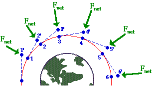
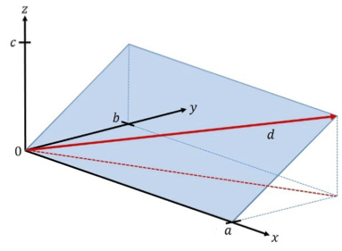
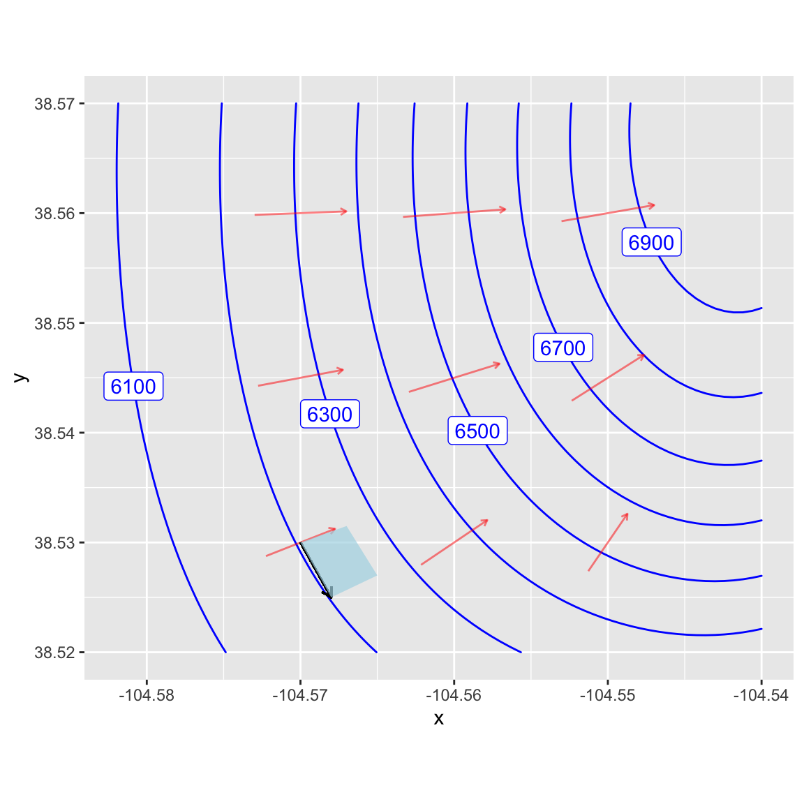

Block I Modeling projects
\[ \newcommand{\dnorm}{\text{dnorm}} \newcommand{\pnorm}{\text{pnorm}} \newcommand{\recip}{\text{recip}} \]
Block 1 Project 1: Ebola in Guinea, part I
In December 2013, an 18-month-old boy from a village in Guinea suffered fatal diarrhea. Over the next months a broader outbreak was discovered, and in mid-March 2014, the Pasteur Institute in France confirmed the illness as Ebola-Virus Disease caused by the Zaire ebolavirus.
Although the outbreak was first recognized in Guinea, it eventually encompassed Liberia and Sierra Leone as well. By July 2014, the outbreak spread to the capitals of all three countries. We will examine the time course of the epidemic using reports that were issued by the World Health Organization along with some concepts and techniques we have been studying in the first block of Math 141Z. Data are provided by the US Centers for Disease Control (CDC).
Data
The CDC data are provided to you as a dataframe named EbolaAll. The dataframe consists of 182 reports spread out over 18 months during 2014 and 2015. Each report is represented by a single row in the dataframe . Each report gives the number of new cases and disease-related deaths since the last report in each or three countries: Sierra Leon, Liberia, and Guinea. These values have been calculated from the raw, cumulative data. The data have been scrubbed to remove obvious errors.
Exploring the Data
We will begin by looking at some data. Use head(EbolaAll) to see the column headers and first 6 rows of data. As you can see, the EbolaAl dataframe is structured like a table, and each row contains multiple columns of data. The table below lists the column names found in EbolaAll dataframe along with a brief description of what the column records.
Date: Date when the World Health Organization issued the reportGcases: Number of new cases in GuineaGdeaths: Number of new deaths in GuineaLcases: Number of new cases in LiberiaLdeaths: Number of new deaths in LiberiaSLcases: Number of new cases in Sierra LeoneSLdeaths: Number of new deaths in Sierra LeoneTotCases: Total number of cases across all three countriesTotDeaths: Total number of deaths across all three countries
We will focus on the Guinea data. As we have done throughout this book, we model this data using the pattern-book functions.
Use Active R chunk 1 to plot the number of new cases in Guinea (variables
DateandGcasesin dataframeEbolaAll).
Question 1: Look at the shape of the graph. Of the functions we have studied, which would be most appropriate as a model for the new cases in Guinea? If none of the functions we have studied best matches this data, select “None of the above.”
Although we are tempted to regard data sets as definitive, they are the culmination of an imperfect process of data collection in the field and imperfect processing/correction/amendment by people. For instance, most of the cases (and deaths) in the epidemic were never confirmed by viral testing and are considered “suspected cases.” Cases and deaths reported on one day might possibly be from previous days, and some cases and deaths were, no doubt, not reported.
In ?lst-ebola-2, run the following command to look at the data:
The raw
EbolaAll data
This table is interactive, to enable you to look around the data.
:::
The resulting display is interactive; you can page through the many rows of data.
Question 2: Look through the data printout and find a data point form one of the World Health Organization reports that seems strange or inconsistent when compared with nearby reports. To receive full credit for this question, you must state the country and date of the report and explain your reasons for identifying this report as inconsistent.
Data Wrangling
An essential part of all projects involving data is to prepare the data for analysis: a process often called data wrangling. Although data wrangling is an important skill, it is not the topic of this book. So we will take care of the programming and present you with the results in the form of a data frame EbolaGuinea.
The wrangling accomplished two things: averaging the data over 7-report windows and extracting a numerical “day number” from the Date of each report.
First, rather than working with the year:month:day format of Date, it is convenient to use a purely numerical quantity to represent time. So, we will translate the day when reports were issued into number of days from the initial report, presenting the result in the column Days. This makes the data-analysis programming easier, since all our mathematical software knows how to handle numbers, but not necessarily calendar dates.
Second, we will smooth the number of cases and the number of deaths. We did this by averaging each day’s number-of-cases and number-of deaths over several report. As you can see in the data, the interval between reports is not constant. Some reports occur just one day after the previous report; sometimes there is a week between reports. The widely spaced reports tend to have much higher cases and deaths than reports that come every day. This is for the simple reason that each report gives the number of new cases and deaths since the previous report; there is more time for the numbers to accumulate when there is a wide spacing between reports. The data reflect not just the process of the Ebola epidemic, but also the way the data were collected and reported, which is not directly of interest to us. To reduce this report-to-report fluctuation, we will average the number of new cases in each report with the three reports before and three reports after: a moving average over seven reports.
The result of our wrangling—the dataframe EbolaGuinea—includes three new columns:
Days: When the report was issued in terms of a count of days from the initial report.G7Rcases: Number of new cases in Guinea averaged across 7 reportsG7Rdeaths: Number of new deaths in Guinea averaged across 7 reports
Analysis of the outbreak
In Active R chunk 1, use gf_point() to plot the smoothed data in EbolaGuinea to show the time course of the epidemic. The variables you want to plot are G7Rcases versus Days. averaged number of new cases in Guinea (variables Days and G7Rcases in dataframe EbolaGuinea).
Question 3 Look at the shape of the graph. Of the functions we have studied, which would be most appropriate as a model for the new cases in Guinea? If none of the functions we have studied best matches this data, select “None of the above.”
It is well known that the infection rate during an outbreak follows a Gaussian pattern when the population interacts consistently. Ebola initially spreads exponentially as people pass the virus to one another. As people are exposed to the virus, there are fewer and fewer people who are still susceptible. The result is that the rate of exponential growth slows and, when the fraction of the population that is susceptible becomes small, the epidemic slows down and the number of new cases decays exponentially. Overall, the pattern of new cases day-by-day looks like a gaussian: zero cases per day before the outputbreak, exponential growth at first after the virus is introduced to the population, leveling out for a time, and exponential decay back to zero new cases.
The graph of G7Rcases versus Days looks only vaguely like a gaussian bump. One possible explanation is that the data summarize more than one outbreak, as the virus spreads from one region to another. We will treat each individual output as a gaussian and try to figure out how many of them make up the whole data. The individual outbreaks will be modelled as a gaussian function with it is own center and width. The center for each gaussian corresponds to the peak of the hypothesized outbreak in one particular region.
We will combine the several gaussians in a linear combination. The scalar multiplying each gaussian is related to the size of the population exposed in each outbreak.
Here is an R/mosaic definition of a linear combination of two gaussian outbreaks.
my_mod <- makeFun(15800*(A*dnorm(t,m1,sd1) +
(1-A)*dnorm(t,m2,sd2)) ~ t) There are five parameters in the function. m1 the time when the first hypothesized outbreak peaked, m2 is the peak time of the second hypothesized outbreaks, and sd1 and sd2 reflect the duration of each outbreak. The parameter A represents the relative population sizes of the two regions. The number 15,800 reflects the total number of cases, which we know retrospectively. (The 15,800 includes a correction for the average day spacing between reports, but that detail need not concern us here.)
Note that selecting A sets the amplitude for both Gaussians, i.e. A and 1−A. The amplitudes A and 1-A sum up to 1. Arranging things this way effectively make A the size of the one outbreak, leaving 1-A to be the size of the other outbreak.
To see how these Gaussians work together, start with the following values: A = 0.5, m1 = 150, sd1 = 50, m2 = 350, sd2 = 50. Do not change the 15800 number which reflects the overall size of the whole outbreak, as opposed to the relative size of the hypothesized individual outbreaks: A and 1-A.
Use gf_point(), the pipe operator |>, and slice_plot() to overlay your model on top of the data. Discrepancies between the model and the data can lead you to improve the model by adjusting the parameters. It is to be expected that you will need several cycles of such parameter adjustments until you find a model that seems to agree with the data in a satisfactory way. to you Guinea cases along with your model.
Once you have adjusted your model to match the data as closely as you can, write down the parameters you used in your report, as well as the graph comparing the data to your final model.
Question 3: Find the longest time interval during which your model systematically overstates the number of cases. What’s the start and end of that interval? (Your answer can be rough, just so long as it points the reader of your report to the interval you mean.)
More data smoothing
Accurately modeling the Guinea case data with two gaussian functions is difficult. Despite the smoothing, the numbers in G7Rcases fluctuate irregularly and substantially from report to report.
Another way to smooth the data, that is, to reduce the irregular report-to-report fluctuations, is to accumulate the number of new cases to get the total number of cases up through each report. (This accumulation, at the end of the epidemic, will be the total number of people who came down with Ebola illness.)
Such a sum of new cases from the beginning of the outbreak through the day of each report is called a cumulative sum or “running total.” Keep in mind that this is not a number, but a new column of data giving the number of cases to date for each of the dates in the data.
To illustrate, the small set of numbers: [1 2 3 4 5 6]. The cumulative sum of this set shows the running total: [1 3 6 10 15 21]. Make sure you are comfortable with how the second set of numbers is related to the first.
The R function cumsum() calculates the cumulative sum on a column of data. You will need to do a little data wrangling; we cannot do it for you because we don’t know what model you decided to settle on.
There are many computer systems for data wrangling. You may have heard of one called Structured Query Language (SQL) which is a required skill listed in many job listings and a multi-billion dollar component of the economy. We will use a system called dplyr specially designed for the R language. In the dplyr system, the function mutate() is used to create a new column in a data frame by carrying out calculations on the existing columns.
Here is an R/dplyr command to generate the running total of cases. (we are using Gcases instead of the smoothed G7Rcases because the cumulative summing will do the smoothing for us.)
It is worthwhile to parse that command carefully. The part to the right of <- is an instruction for taking the EbolaGuinea data frame and adding a new column. The new column will be called GcasesTotal. The values in the new column will be generated by applying cumsum() to the Gcases column. Altogether, the right-hand side of the statement creates a new data frame that includes the new column. The left-hand side of the statement stores this new data frame under a name. For convenience, we are using EbolaGuinea as that name. Effectively, the command as a whole, including the name assignment EbolaGuinea <- can be seen as updating the data frame with the new column.
You can verify that the new column is in place by showing the first several lines of the updated data frame:
Use gf_point() to plot GCasesTotal versus Days. The graph will show how the number of cases accumulated over time to to the overall total for the epidemic as a whole.
Question 5: Consider which of the functions we have studied could be fitted to represent the
GCasesTotalversusDayscurve in your graph? it is likely that none of the functions we have studied fits the data particularly well, but one of them will be better than the others.
We haven’t forgotten that you already created a model of the new cases by a linear combination of gaussian functions. What we want to do now is translate your model for the number of new cases each day into a model of the cumulative number of cases to date. In other words, we want to perform the same action that cumsum() does, but applied to your model rather than data.
To do this, you will replace the gaussian dnorm() function in your model with the sigmoid pnorm(). No other changes are needed. This works because the gaussian and sigmoid functions are related to one another in just the same way as cumsum() relates the GCases column to the GCasesTotal column.
Remember that the Gaussian and sigmoid functions are related to one another. The sigmoid is the accumulation of the Gaussian, i.e. It is the cumulative sum of the Gaussian. We will use this relationship to improve your double Gaussian model.
Create a new function in Active R chunk 1 called my_mod_cumulative(). Plot this new function over the GCasesTotal versus Dates data. As before, you can do this with gf_point(), the pipe operator |>, and slice_plot().
Question 6: Observe the rate of change (slope) of your model. The rate of change represents the number of new infections per day. Find the day on which your rate of change is greatest. Describe how this is related to the argmax of your model from Question 4.
Try adjusting the parameters in my_mod_cumulative() to better match the function to the GCasesTotal data. Some aspects of the outbreak can be better seen from the cumulative number of cases to date, and other aspects may be better seen with the-newcases-each-day data.
Now we will leverage the relationship between the Gaussian and sigmoid functions. Adjust your double Gaussian model and use the Question6 cumulative sums graph to evaluate your modifications. The procedure is outlined here:
Final thoughts
The gaussian as a model for the time course of new cases, and the sigmoid for the time course of accumulated cases to date, are well established. But here we’ve used two gaussians (or, equivalently, two sigmoids). So was there one outbreak or two?
Question 7: Think about why the two-gaussian model matches the data better than the one-gaussian model. What might this mean in terms of the structure of the Ebola outbreak in Guinea? Don’t be afraid to speculate and frame your answer in terms that a layman might understand.
The modeling cycle is all about using your current model to identify ways that you might be able to improve the model. Of course, in practice, you need to present your model for use, so you have to exit the cycle at some point. You’re at that point now, but we ask you to reflect a bit more.
Question 8: Given the results of your modeling efforts and your answer to Question 7, might it be better to model the outbreak using 3 or 4 Gaussians in our linear combination? What are the challenges associated with using more Gaussians?
Question 9: The
EbolaAlldata frame records the Sierra Leone and Liberia outbreaks as well as the outbreak in Guinea. How might you use that additional data to explore the validity of your modeling process?
Authors: Prof. Robert Wolverson, USAFA & Daniel Kaplan, Macalester College and USAFA.
Project 2: Orbit dimensions
This activity will apply some of the concepts and techniques you’re learning to answer the following question:
How fast does a satellite move along its orbit?
As you can imagine, the answer is already known and you could look it up. The point of our reconstructing what is already known is to see the totality of a modeling project, even if it is a very simple one.
In textbooks and in-class demonstrations, students are often shown complete, flawless models. In reality, model construction is a matter of trial and error. Whoops! we are supposed to say “modeling cycle.” That phrase does not suggest anything about “error.” But in reality, modelers make mistakes, operate under misconceptions, collect erroneous data, misunderstand the purpose of building a model, and make all sorts of mistakes. To cope with this unhappy situation, good modelers are constantly checking and testing their models for inconsistencies.
To start, you should have
A good idea of what the eventual answer will be. Often, that idea comes from somewhat vague and imprecise knowledge. For example, you may have heard that it takes a satellite in low orbit about 90 minutes to complete one circuit of the Earth. You may also know that the length of the equator is roughly 40,000 kilometers. (This is the original definition of the meter.) A velocity is distance traveled over time, so a satellite in low orbit has a velocity of roughly \(40000 / 90\) km/minute, which comes out to 7400 meters/second.
A theory that relates what you want to know to what you already know. For our purposes, that theory comes directly from Isaac Newton in the 1680s: his laws of motion and his theory of universal gravitation.
The theory
We won’t assume that you have anything more than a vague understanding of Newton’s laws and theory of gravitation. The diagram shows the situation schematically.

The satellite is traveling clockwise along a curved trajectory encircling the Earth. The position of the satellite is shown at several times by the numbered blue dots. Let’s focus on the satellite at time 1.
The satellite is an object in motion. Newton’s First Law (“Lex I”) is stated in his 1687 book, Philosophiae Naturis Principia Mathematica (Mathematical principles of natural philosophy) on p.12

Translating into English, this is
Law I: Every body persists in its state of rest or uniform motion in a straight line, unless compelled to change that motion by forces impressed upon it.
The dashed line connecting the points labeled 1 and 2’ shows the path that the satellite would follow if there were no forces impressed upon it.
Yet there is a force impressed on the satellite: the gravitational attraction between the Earth and the satellite. This force accelerates the satellite perpendicular to its orbit (toward the center of the Earth) causing the satellite to follow a curved path rather than a straight path off into deep space. The acceleration of the satellite traveling at constant speed in orbit depends on both the velocity \(v\) of the satellite and the radius \(r\) of its orbit.
Task #1: Let \(A_1\) be the acceleration needed to keep the satellite in a circular orbit. Find a plausible relationship between \(A_1\), \(r\), and \(v\). One possibility is that the relationship is a general product of the form \[A_1 = v^n\ r^m .\] Use dimensional analysis to find \(n\) and \(m\). Recall that acceleration has dimension L/T\(^{2}\), velocity has dimension \(L/T\) and radius has dimension L.
Once you determine \(n\) and \(m\), write down the relationship \(A_1\) as a function of \(r\) and \(v\).
As we all know, gravity pulls all objects toward the center of the Earth. The acceleration \(A_2\) due to gravity on an object a distance \(r\) from the enter of the Earth is proportional to the mass of the Earth and is known to be \[A_2 = G\ M_e/r^2\] where \(G\) is a constant of proportionality and \(M_e\) is the mass of Earth.
In order for the satellite to stay in orbit, the two accelerations \(A_1\) (what’s needed to stay in orbit) and \(A_2\) (what the Earth’s gravity provides) must be equal.
Task #2: Set your expression for \(A_1\) equal to the expression for \(A_2\) and solve for the velocity \(v\) of the satellite (our original objective for this exercise). Your answer will involve \(G\), \(M_e\), and \(r\).
Use the known numerical values for \(G\) and \(M_e\) given in the next section to check that your answer makes sense.
The data
The data here come from scientific observations made over centuries that give us numerical values (with units) of \(M_e\) and \(G\) in the theory.
\(G\) is a universal constant (according to Newton’s theory of gravitation). The quantity is given by several sources as
\[G = 6.674 \times 10^{-11} m^3 /(s^2 kg).\]
Similarly, the mass of the Earth is given as
\[M_e = 5.972 × 10^{24} kg\]
These reported facts seem plausible, but it is a good practice to check. Toward that end, check
- The dimension and units of \(A_2(v, r)\) are consistent.
- The value of \(A_2\) at the Earth’s surface is consistent with the famous value 9.8 m/s\(^2\).
Task #3: Finishing up.
Use the formula you derived for \(v\) as a function of \(r\), \(G\), and \(M_e\) to find \(v\) for a satellite in low orbit around the Earth. The official extent of the “Low Earth Orbit Region” is up to 2000 km. If you were using the altitude of the International Space Station (400 km), you would set \(r = r_e + 400km\), where \(r_e\) is the radius of the earth: 6, 378.1 km.
As always, you want to do the calculation in a way that helps you to spot possible errors. Here are two good practices:
- You have already confirmed (or should have) that your formula for \(v\) as a function of \(r\), \(G\), and \(M_e\) is dimensionally consistent. As you plug in numerical values for \(r\), \(G\), and \(M_e\), make sure to keep track of the units explicitly and that the result you get has proper units for velocity.
- Compare your result to the rough estimate of \(v\) for satellites in low orbit that you made at the beginning of this activity. If there is a discrepancy, review both your initial rough estimate as well as your gravity-based derivation of \(v\) to figure out where the inconsistency comes from. Then fix it.
Engine scaling
Least squares and engines
In this Project, we’re going use ideas about dimensions and power-law functions and the tools of linear combinations to uncover some basic physical power-law principles about internal combustion engines from data on a wide array of engine sizes.
The data frame Engines (in the Zcalc package) records the characteristics of 39 different internal combustion engines ranging in weight from 2 ounces to 100,000 pounds and for applications ranging from model airplanes to massive ships.
Internal combustion engines
As often in case in modeling projects, it’s important to know something about the systems you are modeling. You might want to follow these links to learn the basic mechanics and functionality of internal combustion engines.
- Two-stroke engine cycle animation
- Four-stroke engine cycle animation
- Engine displacement
Make sure you are comfortable with at least the following aspects of internal combustion engines:
- Power is generated by burning a fuel (such as gasoline) in one or more cavities called “cylinders.”
- As the fuel is burned, the increase in pressure due to heating inside the cylinder causes a “piston” to be pushed out of the engine.
- The straight-line motion of the piston is converted to rotary motion. The rotary motion conveys the power the engine delivers. It also causes the piston to move back into the cylinder compressing the residual gas in the cylinder. What happens next depends on whether the engine is designed as a two-stroke or four-stroke, but in either case, the piston/cylinder combination eventually reaches a state of compressed air and fuel, ready to be burned for the next push of the piston.
- Each two- or four-stroke cycle converts chemical energy into the kinetic energy of a moving piston. Recall the distinction between “energy” and “power.” Power is a rate: the amount of energy per unit time.
- The mechanical power generated by an engine depends on many factors, for instance the amount of fuel burned each cycle, the number of cylinders, the time period of each cycle.
- Engineers make choices about the design of an engineering with the goals of 1) generating the mechanical power required, 2) efficiency in fuel use, 3) adequate strength to resist the forces generated in the engine cycle such as the peak pressure in a cylinder, 4) durability, and so on. Engines designed for different purposes are not generally just a scaled up version of a standard engine; the proportions within the engine differ.
To give an example, consider the cycle duration of each engine. This is given in RPM, short for “revolutions per minute” which you can convert to the duration of each revolution. The graph below shows the mechanical power output (BHP – short for “brake horsepower”) versus engine RPM. You can see a general pattern that engines with very large BPH revolve slowly. For instance, the two largest-power engines (about 30,000 BHP, equivalent to 22 megawatts) rotate at about 120 revolutions per minute, corresponding to an up-down cycle for a piston of one-half second. The smallest engines rotate roughly 100 times faster. (This high rate accounts for the high-pitched whine associated with tiny engines as compared to the low-pitched rumble of massive engines.)
Suppose the engineer starts her design with a proposed RPM for the engine to deliver the power needed. Knowing RPM and power, the engineer can determine how much fuel needs to be burned in each cycle. Knowing the thermodynamics of fuel burn, the engineer can choose an appropriate configuration of the number of cylinders, the stroke volume of each cylinder, and the diameter (“bore”) of each cylinder. These, in turn, determine the force on the piston and cylinder and hence the material and mass of the engine. For model-airplane applications, the engineer will prioritize the power-to-mass ratio, perhaps sacrificing longevity. For ship applications, the power-to-mass ratio is not so important (ships are good at carrying very heavy things), but longevity is essential (replacing an engine weighing 50 tons from the deepest recesses of the ship is prohibitively expensive).
Consequently, all of these factors–mass, RPM, bore, stroke, etc.–are related to one another in perhaps intricate and unexpected ways. Your task is to discover some of these relationships from the data and, as well as you can, describe and explain them.
Some tools and concepts at your disposal:
- Physical relationships such as size, volume, and speed are often in the form of a power-law, so you will want to find power-law relationships.
- As you remember, a power-law relationship shows up as a straight line on log-log axes.
- You can find the slope of the straight-line relationship by fitting the logarithms of the variables to a linear model, e.g. \(\ln(y) \equiv a \ln(x) + b\). This corresponds to the power law relationship \(y = \alpha x^a\), where \(\alpha\) is a constant of proportionality reflecting the units involved.
- When more than one input variable is involved, power-law relationships look like \(y = \alpha x^a z^b w^c\). Taking logs of both sides produces a generalization of the straight-line model to higher dimensions, namely \(\ln(y) \equiv a \ln(x) + b \ln(z) + c \ln{w} + d\),
- You can use techniques of linear combinations to determine the values of \(a\), \(b\), and the other parameters. This requires software to solve the target problem which will be framed like this:
You might expect engine power to be proportional to the number of cylinders (which would give an exponent on ncylinder of 1.0), but evidently design constraints lead engineers to put proportionately more cylinders on big engines.
You can also see that the exponent on strokes is -1. If you know about engines, you’ll know that a two-stroke engine generates power every cycle, but a four-stroke engine generates power only every second cycle. Thus, at a given RPM and other design features, a four-stroke engine would generate half the power of a two-stroke engine. In other words, engine power is proportional to strokes\(^{-1}\).
You can also see that the \(R^2\) statistic indicates that the three variables RPM, ncylinder and strokes account for the vast majority of the engine-to-engine variation in BHP.
The above three paragraphs are the style of narrative explanation you should give for your explanation of the relationships you find. Do the best you can relating the power-law exponents to the mechanics of engine operation, although we hardly expect you to come up on your own with a relationship like BHP proportional to strokes\(^{-1}\). Give any reasonable speculation you want in describing the “why” of the relationships you find. We are looking for speculation that’s justified by the data. Since this isn’t a course about internal combustion engines, we’re looking more for creativity than matching the actual functioning of engines.
Essay 1: Explain briefly in your your own words why it’s appropriate to use logarithms and linear combinations in finding a power-law model such as \(\gamma x^a z^b w^c\) which doesn’t involve addition.
Note on proportionality. A function such as \(f(x) \equiv 3 x\) has a property called “proportionality.” Proportionality means that doubling the input produces a doubled output. (Try it by applying the function to an input \(x = 1\), producing \(f(x)=3\). Then double \(x\) and see what happens to \(f(x)\).) Many people are surprised at first to realize that a function like \(g(x) = 3 x + 2\) is not proportional. (Try the plug-in experiment.) Yet the relationship \(h(x, y) = 3 x y\) is proportional in each of \(x\) and \(y\).
Try the plug-in experiment with \(h(x, y) = 3 x y\). Start by assigning numerical values to both \(x\) and \(y\) and calculating the resulting \(h(x, y)\).
- True or false: For function \(h(x, y)\) doubling input \(x\) leads to doubling \(h(x, y)\).
TRUE FALSE
question id: engine-scaling-1
- True or false: For function \(h(x, y)\) doubling input \(y\) leads to doubling \(h(x, y)\).
TRUE FALSE
question id: engine-scaling-2
- True or false: For function \(h(x, y)\) doubling input \(x\) and simultaneously doubling input \(y\) leads to doubling \(h(x, y)\).
TRUE
FALSE
question id: engine-scaling-3
Starting out
As a matter of geometry, engine displacement is proportional to the number of cylinders (ncylinder) times the stroke length (stroke not strokes) times the square of the cylinder diameter (bore). That is, in any given engine, displacement is \(\alpha\) ncylinder\(^1 \times\) stroke\(^{1} \times\) bore\(^2\). Determine whether the engine data is consistent with this. (Note: Expect only rough correspondence between a stated theory and the data. Remember that the engine design always involves choices. For instance, over the wide range of engines represented in the data, designers might have made choices like “long strokes” should be paired with smaller bores.)
Essay 2: Explain what about your model is consistent or not with the geometry theory of displacement. If you see other patterns in the coefficients, describe them and speculate why they might show up.
Essay 3: Explain why it’s appropriate for the tilde expression used in lm() to involve so many calls to the log() function. If the reason is obvious to you, don’t feel you need to chase down subtle answers; just say the obvious.
Another example
The force on a piston will be proportional to the surface area of the piston (related to bore) and the square of the RPM times the stroke length (all other things held constant). To keep engine parts from breaking from the force, they must be stoutly designed. One way to accomplish this is to increase the engine mass. This proposed relationship between mass, bore, RPM, and stroke is merely a theory. It might be that it applies only to particular parts in the engine and not to the entire engine mass.
Use the data to determine whether the simple theory (the theory about the relationship between engine mass, bore, RPM, and stroke) holds up in practice. In your essay, describe what about the model leads you to conclude that the theory holds or not.
Essay 4: Explain what about your model is or is not consistent or with the simple theory of mass/strength/RPM. If you see other interesting patterns in the coefficients, describe them and speculate why they might show up.
Cylinder shape
Consider the shape of a cylinder. As you know, the caps of a cylinder are circles; the volume of a cylinder is the area of the circular cap times the height of the cylinder. Of course, there are many different shapes of cylinders that have the same volume: small caps and tall height or large caps and short. One way to describe the shape of a cylinder of a given volume is by the ratio of the height to the diameter the circular cap. The height of each engine’s cylinder is given as its stroke length. The diameter of the circular cap is the bore. If all engines had the same shape cylinder, the ratio of stroke to bore would be constant. In reality, stroke/bore ratio varies by a factor of 3 from one engine to another.
It’s reasonable to expect that the engine designers made their choices of cylinder shape based on the use of the engines or other features of the engine design. Your job is to build a model of cylinder shape as a function of other variables describing the engine.
The sandbox below has a command that creates a variable c_ratio whose value is the stroke/bore ratio. (Don’t worry about understanding the command. You just have to know that it creates the new variable c_ratio by dividing stroke by bore.) When you build your model, put log(c_ratio) on the left side of the tilde expression and the logs of other engine variables on the right, just as you did in the previous two examples.
See what you can find and describe your findings in the essay box.
Essay 5: What (if anything) accounts for the variation in cylinder shape?
Walking uphill
Making the grade
In this project we’ll model energy consumption for walking uphill for a distance \(d\) at grade \(g\). The goal of this project is to determine whether there is an optimal grade that minimizes energy consumption per altitude gained. You’ll translate your results into a recommendation to the National Park Service for designing challenging (but not too challenging!) hiking paths through a hilly terrain to reach a scenic viewpoint at the top of a hill or the crest of a ridge. Finally, you’ll illustrate your findings by drawing an example of a suitable route for a path.
It’s important to agree on some terminology. Figure 1 shows a simple mathematical model of a hillside. The coordinate system is \(x\) and \(y\) marking position on the horizontal plane and \(z\) denoting the altitude of the hillside at any \(x\), \(y\) point.


Admittedly, Figure 1 does not look much like a real hillside, but keep in mind that this is calculus. Figure 1 is a good representation of a very small bit of hillside. The \(y\) axis in Figure 1 points directly uphill. To translate this to a bigger picture, focus on the gradient vector in ?fig-simple-domain located at (104.57 W, 38.43 N). We would align the \(y\) vector in Figure 1 with the gradient vector in Figure 2. The \(x\) vector in Figure 1 will translate into a vector that’s perpendicular to the gradient vector. As a result the blue plane in Figure 1 corresponds to the small blue patch in Figure 2.
Refer back to Figure 1. The grade of the inclined plane, going in the steepest direction, is \(c/b\), where \(c\) is the height of the top of the inclined plane, and \(b\) is the \(y\)-coordinate of the top. A person desiring to find a shallower grade can walk obliquely, as in path \(d\). The red dashed line shows the route of this path on the \(x,y\)-plane, the the person is also ascending as they go up the path. So, starting with coordinate \((x=0, y=0, z=0)\), the person walking up path d will end up at coordinate \((x=a, y=b, z=c)\). Thus, the length of path d will be \(\sqrt{a^2 + b^2 + c^2}\).
The grade of path d is the vertical distance divided by the horizontal distance (that is, the distance in the \(x,y\)-plane). This distance is \(\sqrt{a^2 + b^2}\), so the grade of path d is \(g_{path} = c / \sqrt{a^2 + b^2}\).
Energy used
As described in class, the energy E consumed per unit distance (along the path) walked is \[E/d = (h + v g_{path})\]. According to the American College of Sports Medicine (ACSM), reasonable value are \(h=0.1\) and \(v=1.8\).
The ACSM handbook doesn’t give units or dimension for \(h\) and \(v\). But you can figure them out from the units of energy over distance with the understanding that the dimension of both \(h\) and \(v\) are the same.
- What is the dimension of \(g\)?
dimensionless \(L\) \(L^2\) \(LT\)
question id: walking-uphill-1
- What is the dimension of \(E/d\)?
\(MLT^{-2}\)
\(ML^2T^{-2}\)
\(M^2 L^2 T^2\)
\(M L^2 T^2\)
question id: walking-uphill-2
Applying the geometry
Our goal is to find path grade \(g_{path}\) that will minimize the energy used to ascend a given height. For simplicity, let’s assume that the height is 100 m.
Suppose the path has a grade \(g_{path}\) and reaches a height of 100m. The distance \(d\) in meters travelled along the path will be \(g_{path} d = 100\) meters
- If the distance travelled along the path (solid red line in Figure 1) is \(d\) meters, what is the length of the horizontal trace of the path (the dashed red line in Figure 1), given that the change in height is 100 meters?
\(\sqrt{d^2 - 100^2}\)
\(\sqrt{d^2 + 100^2}\)
\(d\)
Need additional information
question id: walking-uphill-3
- What is the grade of the path when the length of the path \(d\) meters?
\(g(d) \equiv 100 / \sqrt{d^2 - 100^2}\)
\(g(d) \equiv 100 / \sqrt{d^2}\)
\(g(d) \equiv \sqrt{d^2 - 100} / 100\)
\(100^2 / (d^2 - 100^2)\)
question id: walking-uphill-4
According to the ACSM formula, the energy consumed in gaining an altitude of 100m over a path of length \(d\) is \[E(g, d) = (h + v g)d\]
Since we have a formula for the grade as a function of distance, \(g(d)\), we can re-write the ACSM energy formula as a function only of \(d\). Find that formula for \(E(d)\) and then program it as the function Energy() in the sandbox. Then make a plot of Energy(d) and locate the extremum by reading the graph. (You may have to zoom in on the domain. And remember, since the vertical climb is 100 meters, the shortest possible \(d\) is—straight up the cliff!—100 meters.)
It’s a little easier to find the argmin of \(d\) by calculating the derivative of Energy() with respect to d and looking for a zero crossing. Try that.
Interpreting the optimal grade
By solving the minimization problem, you have found the optimal grade. In communicating your result, you should place it in context. For instance …
- The ACSM values of \(h=0.1\) and \(v=1.8\) are estimates. Presumably there is some variation from one person to another as well as uncertainty in the estimate itself.
- The minimum might be sharp or broad. This is a question of how much changing the input value changes the output value.
How to take these matters into account when giving your recommendation for an optimal grade? Here are some ideas.
The ACSM is the American College of Sports Medicine. Presumably the people they studied are athletes, not necessarily typical visitors to a national part.
Do you think a typical park visitor would have larger or smaller \(v\) than an athlete? It’s reasonable to think that \(v\) might be different by a factor of 3 in non-athletes. How does such a change in \(v\) change the argmin grade and the min of the energy?
It may not be important to operate exactly at the argmin. What’s important is that the energy expended not be crazy bad.
One way to think about how acceptable is a grade is to think about how sensitive the output of the energy function is to a change in grade. Pick some percentage change that you regard as hardly likely to be noticed by a park visitor. (Give some justification for your selected percentage, but of course there is no exact right choice.) Translate your percentage into a range of distances \(d\) that is consistent with a change in output less than your percentage. Then convert the range in \(d\) to a range in \(g\).
Communicating your result
Consider three levels of communication:
- You report the argmin grade \(g\) only. This provides the reader of your report with no context. Must the grade be exactly that? Try to avoid such narrow communication.
- You report a range of acceptable grades. This way if the path designer runs into some problem with a particular path, he or she can consider reasonable alternatives.
- You report (2), but you also translate that into terms that will be comfortable for a decision-maker who is not mathematically trained. (You might be surprised how many well-educated people do not assimilate percentages well.)
One way to help people visualize your recommended grade … Pick a few real-world examples of paths, both steep and shallow. For example, there’s the Manitou incline near Colorado Springs as an example of a steep hike. Heartbreak Hill in the Boston Marathon has earned it’s name. Another example, pick a couple of streets in San Francisco, perhaps one with a cable-car running along it.
Report your results in the form of a table showing your recommendations alongside the real-world examples.
- Draw some example paths on a real terrain. To support you in this task, here is a contour map of some imagined parkland. The contours are spaced 10 meters apart vertically and the axes give (horizontal) distance in meters.
{kind=link}
Translate the upper and lower bounds of your grade interval (as in (2)) into a number of meters you must walk horizontally to go from one contour to the next. For instance, suppose your grade interval translate into 50 meters to 75 meters horizontally. (But use your own grade interval.)
Mark off on a ruler the horizontal distance that must be covered in going from one contour to another. (The red vertical bar in the top left is 50 meters long, the blue is 30 meters.) Then, from the starting point of the path, use that horizontal distance to connect to the next highest contour. Continue on from there, one contour at a time. If you find that the horizontal distance isn’t sufficient to reach the next contour, then your grade will be shallower than the most efficient one. So be it.
After printing out this imagined map use the method in the previous paragraph to draw a path connecting the starting point for the path to the scenic outlook at the top of the hill at a grade that is as close as you can get to the bottom bound on efficient grade that you found. Then draw another path at the top bound for efficient grade. Hand in your maps.
{kind=link}

No answers yet collected